UX Design: Emergency Medical Care
CHALLENGE: How we may use a human-centred design to tackle our global issues and contribute to a better world?
We face big challenges in today’s world, such as inequality that we need to address urgently.
To overcome the challenges, the United Nations (UN) designed the Sustainable Development Goals (SDG), also known as the Global Goals, and called for action.
World Design Organization (WDO) is an NGO which advocates designing for life enhancement, it hosted the World Design Challenge in partnership with Algonquin College and UPES University in March 2023.
Participating in the Challenge, I took the opportunity to address a specific global issue and design a solution cooperating with international students. As a result, we suggested a mobile app to improve the medical system in urban India.
A Quick Look
Problem Statement: How might we improve the response time of emergency medical transportation services in urban India?
Solution: An emergency service mobile app which assists both injured and service providers to access emergency support such as location tracking and instant medical advice.
- Role: UX designer
- Duration: 3 weeks
- Tools: Slack, Miro
Research
To define a problem in terms of SDG, we first selected human transportation as our topic aligning with Goal 9 (Industry, Innovation and Infrastructure) and Goal 16 (Peace, Justice and Institution) to frame our focus.
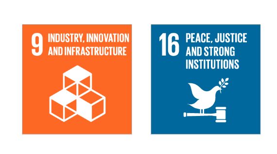 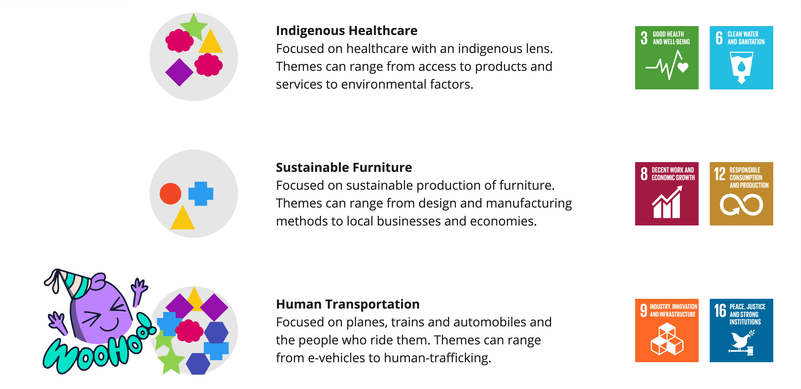Secondly, we brainstormed on the problem spaces, which are defined by a group of people and their needs, and we chose to discuss further the fragmented emergency medical system (EMS) in India.
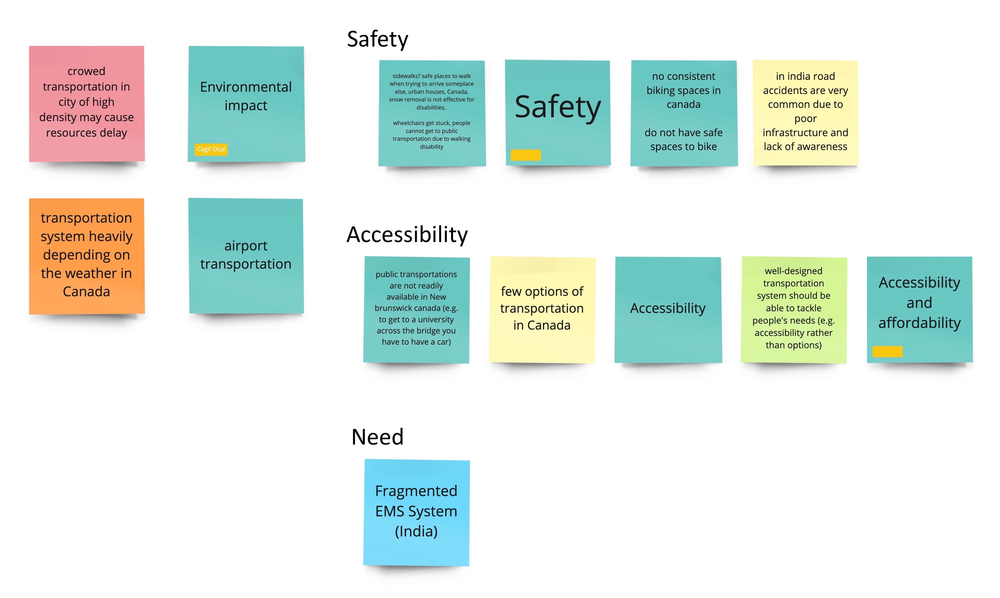We raised some questions, such as how the EMS in India is and what actions the organizations and corporates have taken for the issue, to direct our research and prepare for the next step: area of focus.
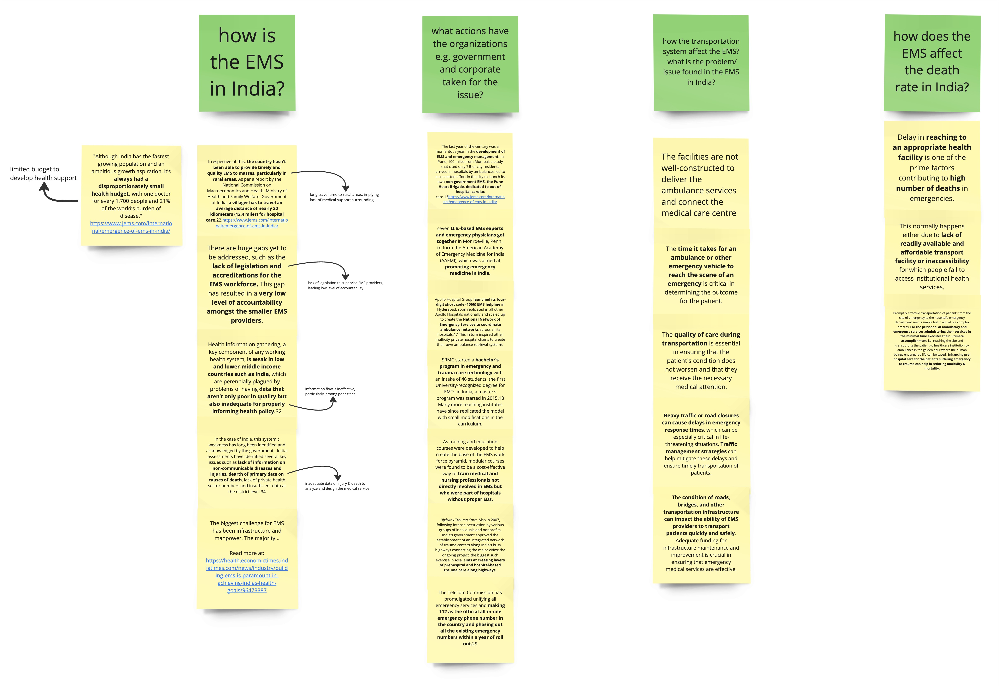Based on the research, it was found that 80% of trauma patients have difficulty reaching definite care facilities within the Golden Hour. Meanwhile, 50% of deaths could be averted with pre-hospital and emergency care.
Therefore, we focused on the areas of response, ambulance and transfer across the emergency service to improve the EMS. We then did an affinity mapping to learn more about the problem space and addressed the stakeholders.
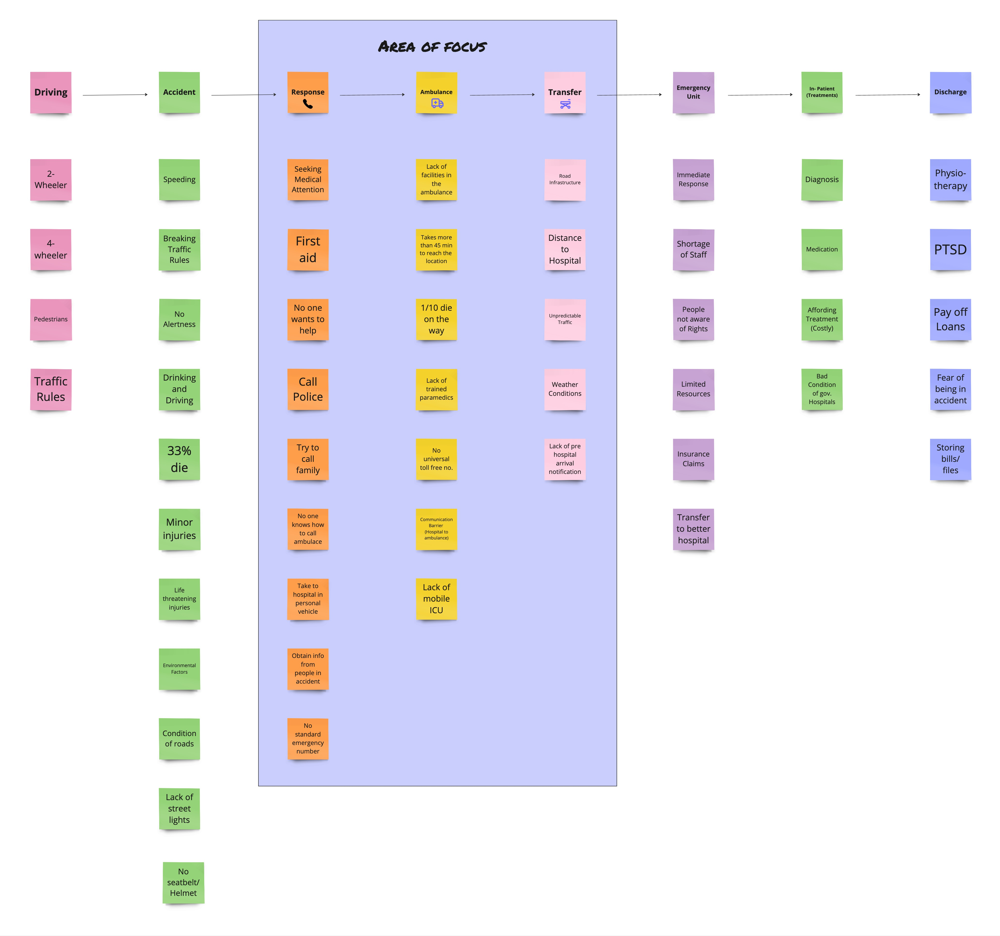 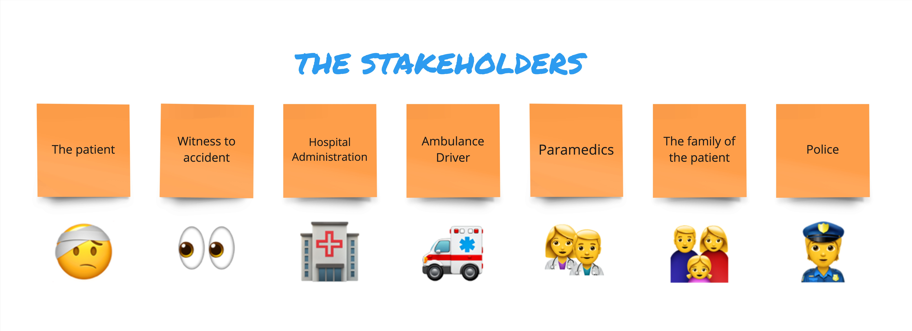
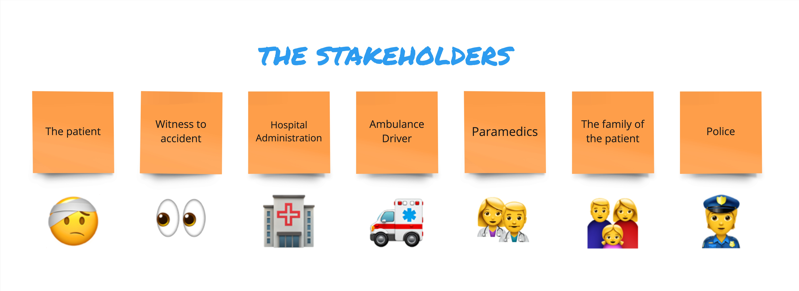
To define the concrete reasons behind the problem, we developed an Iceberg Model which helped us reveal the underlying causes.
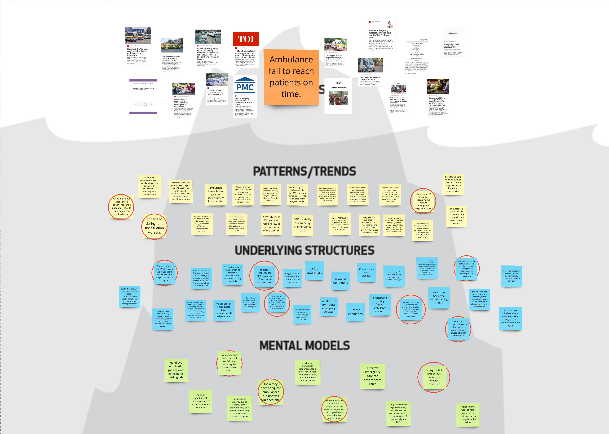 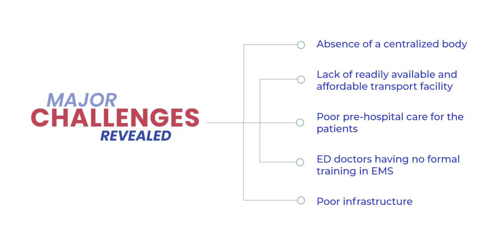After a process of system thinking, the problem statement was derived.
How might we improve the response time of emergency medical transportation services in urban India?
Solution Development
To maximize the potential of our design, we created a solutions landscape. It helped us map the challenges and existing solutions so that we may identify the opportunity to innovate a solution.
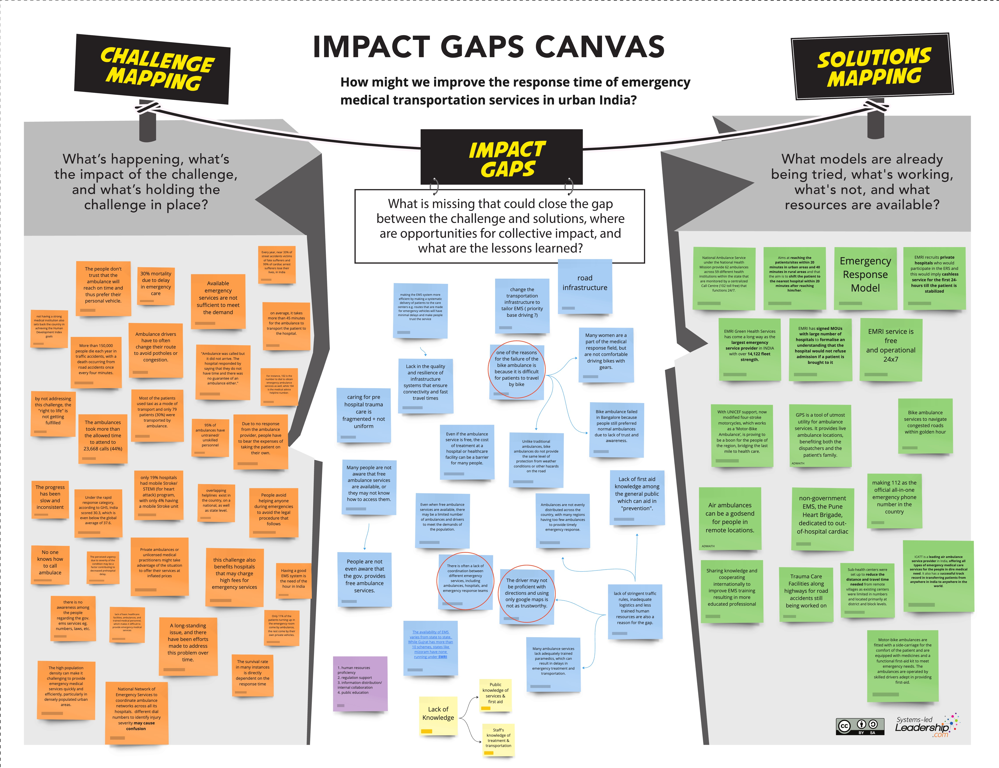Employing Crazy 8s, we suggested many ideas to help the problem. Finally, we came up with the idea that an emergency service mobile application may assist both injured and paramedics to access emergency support and thus reduce the death rate due to delayed medical care.
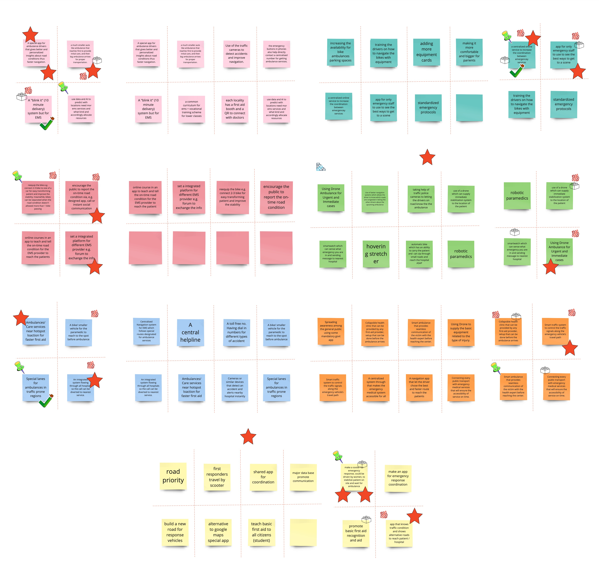Pitch
After the ideation, we pitched our solution and proudly won the 2nd place!
1. Patient Interface
2. Paramedic Interface